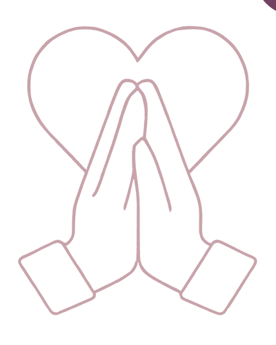
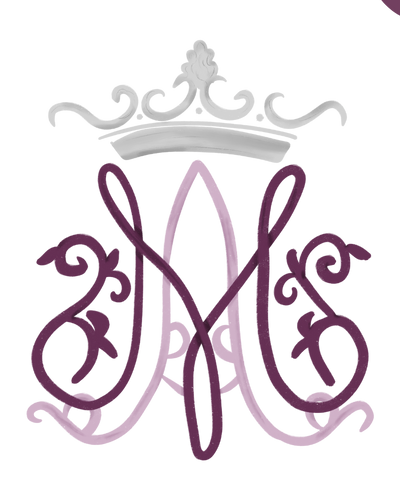
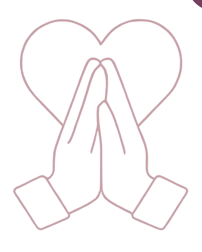
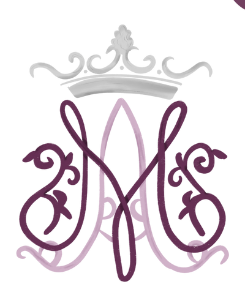

Fiat90
90 días de fe, humildad y entrega, siguiendo el ejemplo del ‘sí’ de María.
keyboard_double_arrow_right Participa con nosotras Conceptos básicos
Conceptos básicos
 Paso a paso
Paso a paso
 Esquema lecturas

Esquema oraciones
Esquema rosario

Esquema consagración
Esquema lecturas

Esquema oraciones
Esquema rosario

Esquema consagración
 Reuniones y Ancla
Calendario
Reuniones y Ancla
Calendario
- Vida cotidiana: Prácticas que reducen distracciones, fomentan humildad y desapego y abren un espacio para Dios en tu día a día.
- Cuerpo y hábitos: Acciones que fortalecen la autodisciplina y recuerdan que tu cuerpo es templo del Espíritu.
- Espiritualidad diaria: Lleva tu mente y tu corazón a la presencia de Dios.
Además, cada participante elige un “ancla”, un guía espiritual que acompañará y motivará a mantener el compromiso todo el camino.
Cada mujer adapta el viaje a su ritmo y situación, haciendo que esta experiencia sea única, cercana y profundamente transformadora.
¿Tiene algún costo?
Ninguno, los únicos requesitos para participar con nosotras son llenar el formulario y vivir dentro de la map_pin_heart Zona Metropolitana de Guadalajara, Jalisco.
¿Cuáles son los objetivos del programa?
- Fortalecer tu vida espiritual y profundizar tu relación con Cristo.
- Crecer en humildad, pureza y devoción, siguiendo el modelo de María.
- Formar una comunidad de apoyo con otras mujeres, acompañándose en la fe y la responsabilidad.
¿Quiénes pueden participar?
¡Todas las mujeres son bienvenidas! De cualquier edad y situación de vida que anhelan una vida de oración más profunda, crecer en las virtudes y caminar acompañadas de una comunidad en la fe.
¿Debo ser católica para participar?
FIAT90 nace de la devoción mariana católica, pero mujeres de otras tradiciones que se sientan identificadas con su espiritualidad también son bienvenidas.
¿Debo cumplir todas las disciplinas perfectamente?
No. El corazón de FIAT90 no es la perfección, sino el progreso. Lo importante es crecer en confianza en Dios, no completar una lista impecable.
¿Qué pasa si me cuesta cumplir con algunas disciplinas?
Es completamente normal. Los desafíos son oportunidades para orar, pedir gracia y apoyarte en tu Ancla. El crecimiento espiritual suele venir precisamente de la perseverancia.
¿Es igual a la versión de 2025?
Sí y no. La esencia permanece, sin embargo, hemos hecho
algunos ajustes para acompañarte mejor.
Ahora el grupo se divide en subgrupos pequeños para favorecer
una experiencia más íntima; la dinámica del “ancla” se vive de
manera renovada; y el esquema de lecturas ofrece dos opciones
para elegir: Mujeres en la Biblia o los Evangelios.
¿Cuando empieza?
calendar_month Inicia el lunes 5 de enero y termina el 5 de abril, domingo de Resurección.